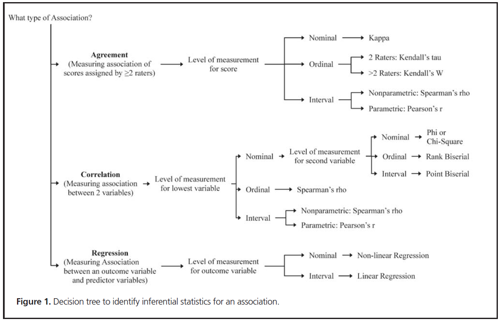
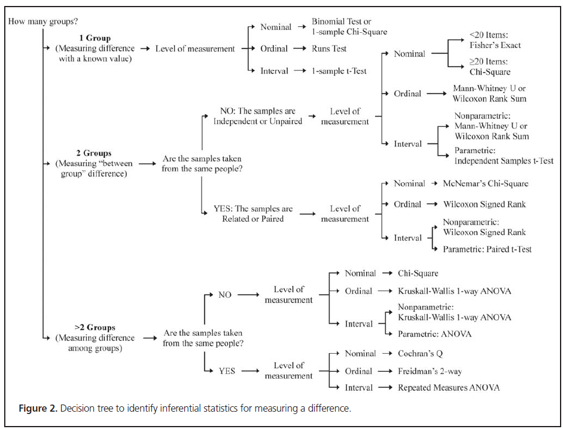

#d <- read.csv("data/bivalirudin.csv") # load data
#table_dosechgs_gender <- xtabs(~d$d_Male + d$DV_3DoseChanges, data=d) # crosstabulate
#knitr::kable(table_dosechgs_gender, align = "l")
#summary(table_dosechgs_gender) # calculate chi-squareData Analysis
The purpose of this page is to give you tools to analyze your data using appropriate statistics. There are two important tasks:
- Define the measurement levels of your variables.
- Choose statistics appropriate for the measurement levels of your variables and the purpose of your analysis.
Define the measurement levels of your variables
It is important to know the measurement level of your variables (De Muth 2009). How do you express the outcome by which to compare your pre- and post- samples? Is it…
- Percent of patients who achieve an initial therapeutic goal?
- Time to initial therapeutic level?
- Percent of patients who experience an adverse outcome (such as acute kidney injury)?
- Mortality rate (% surviving)? In such a case you would be comparing two proportions.
- “Time to…” a therapeutic level? In such a case you would be comparing two different quantities of time.
Nominal measurement
Nominal measurement is categories. Each patient must fall into only one category, and the categories must be mutually exclusive and exhaustive. Here are some examples:
- Gender (Male/Female)
- Racial identity
- Marital status
- Control group/Experimental group
- Infected with COVID vs. not infected with COVID
- Disease presence
- Mortality
Outcomes are usually reported as frequency counts or percentages (in each category).
Ordinal measurement
Ordinal measure also puts patients into categories, but the categories have an ascending or descending order: patients have more or less of somthing. But the differences between the categories is not necessarily the same. Here are some examples:
- Stages I-IV tumors
- 0-10 Apgar scores
A Stage IV tumor is more advanced than a Stage II tumor, but not necessarily by twice as much. A Stage III tumor is more advanced than a Stage I tumor, but not necessarily by three times as much.
For this reason, we cannot perform arithmetic or calculate means or other parametric statistics on ordinal values.
However, if your project has an ordinal level outcome on which you need to compare treatment groups, there are appropriate nonparametric statistics you can use to see which group is significantly more of this outcome than another. Examples include:
- chi-square \(\chi 2\) statistics
- the Mann-Whitney U test
- the Spearman’s rho test
Interval and ratio level measurement
Finally, interval and ratio measurement means continuous data: patients fall somewhere on a continuum, like a temperature scale. As a result, variables measured using interval and ratio scales are often referred to as continuous variables. Here are some examples:
- Height
- Weight
- Cholesterol level
- Blood pressure
- Time
On variables like these there is relative positioning with no gaps or interruptions in the continuum.
The difference between interval and ratio scales is that ratio has a true zero value while interval does not.
On variables like these it is permissible to do arithmetic and to summarize them with the mean and standard deviation which, in turn, avail to you more commonly used advanced statistics like:
- t tests
- analyses of variance (ANOVA)
- correlation
- regression
Once you have a good feel for the measurement levels of your outcome and predictor variables, you can choose appropriate statistics. Simpson (2015) offers two decision trees to help you make these choices:
 
Choose appropriate statistics
This section offers more information on several choice statistics. These are statistics I’ve used for recent resident projects and seen in the journals.
Chi-square \(\chi 2\) tests
The chi-square \(\chi 2\) test is a commonly used statistic for nominal/categorical data. We use it to examine the distribution of cases across categories. Essentially, it compares the distribution of cases you actually see to the distribution of cases you would expect to see from normal variation.
Here is one example of a chi-square \(\chi 2\) test for a recent resident project. The question is whether gender (male/female) makes a statistically significant difference in whether patients need three or more dose changes of bivalirudin before they reach a therapeutic goal.
The chi-square \(\chi 2\) value of 1.9421 with one degree of freedom has a p-value of 0.1634. It is not statistically significant, suggesting that gender makes no significant difference in reaching therapeutic goal.
t tests
The t test is a commonly used statistic for comparing two groups on a continuous outcome.
External resources for data analysis
Here are a few links to external resources on data analysis and statistics.
- The R Psychologist, by @magnussonCohend - is an outstanding resource to better understand statistics
- Online Modules in Research Methods and Data Analysis at the University of South Australia
- Data Analysis from the University of New Hampshire
Software tools for data analysis
Of equal importance to the didactics of statistics are the brass tacks of software for working with statistics. Here are several software tools for analyzing data:
Excel-based tools
Data analysis software
- R @R-base, with RStudio and R Markdown, is free open source software for data analysis, statistics, and data visualization. It is powerful and flexible but it does require ongoing learning of code because it is constantly evolving.
Here are several other robust software applications for data analysis available to you. One or more of them may be free for you as a Gonzaga student:
- JMP - JMP is a suite of software used for statistical analysis
- SAS - The SAS System is a comprehensive statistical software package from SAS Institute for data management, graphics, analysis, and presentation
- SPSS - IBM SPSS (Statistical Package for the Social Sciences) provides data and statistical analysis, file management capabilities, graphics and reporting features